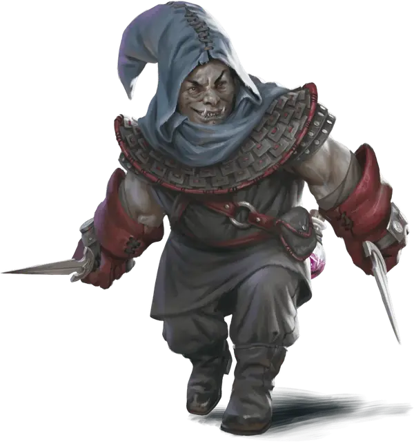

Зарак
Zarak
Средний Гуманоид (Орк), хаотично-злой, именной НИП

Класс Доспеха 14 (кожаный доспех)
Хиты 37 (5к8 + 15)
Скорость 30 футов
| мод | спас | ||
|---|---|---|---|
| СИЛ | 13 | +1 | +1 |
| ЛОВ | 16 | +3 | +5 |
| ТЕЛ | 16 | +3 | +3 |
| мод | спас | ||
|---|---|---|---|
| ИНТ | 11 | +0 | +2 |
| МДР | 15 | +2 | +2 |
| ХАР | 6 | −2 | −2 |
Навыки Акробатика +7, Восприятие +6, Проницательность +6, Скрытность +7
Чувства тёмное зрение 60 футов, пассивное Восприятие 16
Языки Общий, Орочий
Опасность 2 (450 опыта)
Бонус мастерства +2
Особенности
Особое снаряжение. Зарак носит с собой зелье невидимости [potion of invisibility].
Действия
Мультиатака. Зарак совершает две атаки Кинжалом.
Кинжал. Рукопашная или дальнобойная атака оружием: +5 к попаданию, досягаемость 5 футов или дистанция 20/60 футов, одна цель. Попадание: 5 (1к4 + 3) колющего урона, плюс дополнительно наносит 5 (2к4) колющего урона, если целью является существо, а у Зарака не менее 18 хитов.
Гаррота. . Рукопашная атака оружием: +5 к попаданию, досягаемость 5 футов или дистанция 20/60 футов. Попадание: 8 (2к4 + 3) рубящего урона, и цель становится схваченной (Сл высвобождения 11). До окончания захвата цель получает 8 (2к4 + 3) рубящего урона в начале каждого хода Зарака. Зарак не может схватить другое существо или использовать Каприз убийцы.
Бонусные действия
Каприз убийцы. Зарак совершает Рывок, Отход или Засаду.
Реакции
Невероятное уклонение. Когда нападающий, которого Зарак может видеть, попадает по нему атакой, он может реакцией уменьшить вдвое урон, причиняемый ему этой атакой.
Описание
Зарак - убийца без чести и совести. Необычно низкорослый для кого-то орочьего происхождения, он мог бы сойти за уродливого безбородого дварфа, если бы не его гниющие клыки и сероватая бледность. Единственное, что он любит, - это деньги, и он без колебаний нанесет удар союзникам в спину, если они встанут между ним и богатством, которого он жаждет.